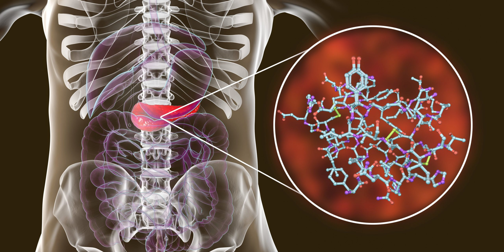
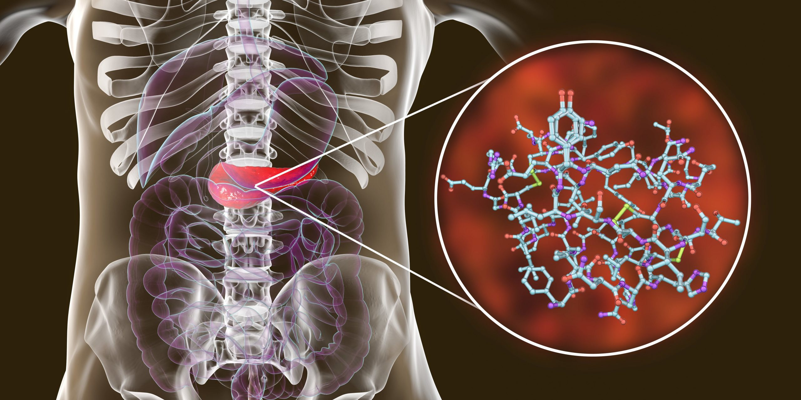

Descubra hoy un método natural hecho en 30 segundos para reducir los niveles de azúcar en sangre. (aprende en casa)
Durante varios años, los médicos y la industria farmacéutica afirmaron que la solución a la diabetes era tomar metformina, gliffage y varios otros tipos de medicamentos, inyecciones de insulina, reducir el consumo de carbohidratos y reducir la cantidad de azúcar consumida.
Sin embargo, un estudio de la Universidad de Utah reveló que la verdadera razón de la diabetes alta es otra:

Es una molécula tóxica que queda atrapada en las arterias y venas y termina llenando de grasa el páncreas y el hígado, y probablemente sepas que el páncreas es el órgano que produce naturalmente insulina en tu cuerpo, pero debido a esta molécula tóxica tu páncreas se está viendo afectado a diario y debido a esto no puedes funcionar tan perfectamente como lo hacías en tu juventud y es por eso que terminas padeciendo esta enfermedad y sus terribles consecuencias.
Pero la buena noticia es que gracias a esto, científicos de Utah han revelado un método casero realizado en 30 segundos en la comodidad de tu hogar, que elimina esta molécula tóxica de tu cuerpo y revierte la diabetes de forma rápida y segura, haciendo que puedas vuelver a disfrutar de tus comidas favoritas sien miedo, ten más energía y disposición y lo mejor de todo, disfruta de buenos momentos en familia, sin tener que preocuparte por los niveles altos de azúcar en sangre.
Para ver el vídeo que explica todos los detalles de este innovador método realizado en 30 segundos, haz clic en el botón de abajo que te ayudará en todo lo que necesitas.
Sin embargo, un estudio de la Universidad de Utah reveló que la verdadera razón de la diabetes alta es otra:

Es una molécula tóxica que queda atrapada en las arterias y venas y termina llenando de grasa el páncreas y el hígado, y probablemente sepas que el páncreas es el órgano que produce naturalmente insulina en tu cuerpo, pero debido a esta molécula tóxica tu páncreas se está viendo afectado a diario y debido a esto no puedes funcionar tan perfectamente como lo hacías en tu juventud y es por eso que terminas padeciendo esta enfermedad y sus terribles consecuencias.
Pero la buena noticia es que gracias a esto, científicos de Utah han revelado un método casero realizado en 30 segundos en la comodidad de tu hogar, que elimina esta molécula tóxica de tu cuerpo y revierte la diabetes de forma rápida y segura, haciendo que puedas vuelver a disfrutar de tus comidas favoritas sien miedo, ten más energía y disposición y lo mejor de todo, disfruta de buenos momentos en familia, sin tener que preocuparte por los niveles altos de azúcar en sangre.
Para ver el vídeo que explica todos los detalles de este innovador método realizado en 30 segundos, haz clic en el botón de abajo que te ayudará en todo lo que necesitas.
 Haz click aquí para ver el vídeo
Haz click aquí para ver el vídeo